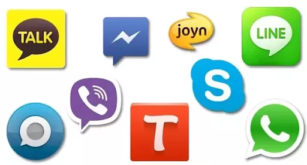
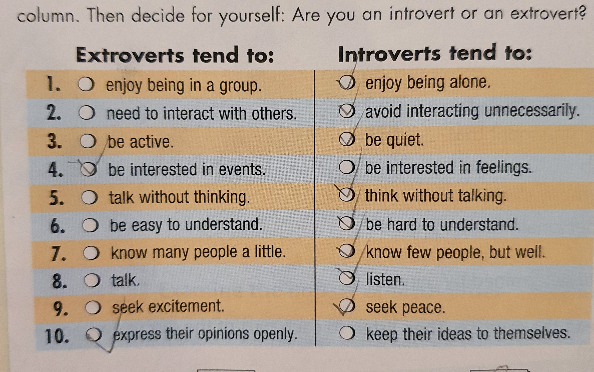

Spring 2020 Online Assignments
This page is for students who have been unable to return to Taiwan and who haven't yet handed in the assignments for PEU (Freshman). Although the deadline has passed for most of these assignments, I will accept late hand-ins, however I will subtract a few points.
Email me your assingments, being sure to give me your name, student number, and original class time.
Please hand in all the assignments, as not doing so will make it hard for you to pass the class.
Week 1
video links: week 1 YouTube video
Questions:
- What movie did the student watch?
- How did the student feel about the color gray?
- What were the 5 restaurants that the class talked about?
- What's another phrase that means "I'm just pulling your leg?"
- We know that in part E number 5 on page 75 is false (Chad would like to buy all new furniture = false). Why?
Week 2
video link : week 2 YouTube video
Questions:
- What is a noun? (3 things)
- What are the teachers examples: (He doesn't mind _________, I would like _____________)
- On p.76 (A), what is the answer to #4 and #16: 4) (not feel like / socialize) and 16) (not mind / try)
- What were 2 student examples?: I need ___________, I choose ____________
- What did most students choose to mean the most?
- taller
- richer
- better student
- famous
Week 3
note: there are two videos this week.
video link 1: week 3 YouTube video 1
video link 2: week 3 YouTube video 2
Questions for Video 1:
- What does "the same old grind" mean?
- What 3 things are the same old grind for students? (from the video)
- What was one student bored with?
Questions for video 2:
- What's the answer to #9? "We believe ____ ____ ____ ____, even when it’s difficult."
- What does "can't put my finger on it" mean?
Week 4
video link: week 4 YouTube video
Questions:
- In the PPT there was a picture of a horse. Which picture was it?
- What were the 5 words the students used to describe pottery?
- What were the 8 words the students used to describe jewelry?
- There were some adjectives to describe art on p.87 in the textbook. Which 4 words meant "strange?"
- What does the phrase "I'm just not really into..." mean? (p.87)
Week 5
note: there was no video assignment this week because of Spring Break.
Week 6
video link: week 6 YouTube video
Questions:
- In the PPT, what was the old man hit by in the Simpsons video?
- He was hit by a football
- He was hit by a cake
- He was hit by a tree
- He was hit by President Obama
- In the PPT, what was eaten by the boy?
- A sandwich
- Cake
- Bread
- Cookies
-
In the Class worksheet. Mr. Baker loves one of the drawings. Which one?
- The Kiss
- Waterfall
- The Vitruvian man
- The Scream
- In the PPT, how was the door broken?
- In the PPT, how was the lamp broken?
Week 7
video link: week 7 YouTube video
Questions:
- Change this to the Passive Voice
- The women play soccer.
-
Change this to the Passive Voice
- The woman is hurting her child.
-
What is the question?
- Q)____ _____ _____ _____?
-
How can money be made? (4 ways)
-
How can the commute to school be made?
Week 8
note: there was no video assignment this week because of GEPT testing.
Week 9
video link: week 9 YouTube video
Questions:
- What social media did the first student like using the most? What did they use it for?
- What social media did the third student use the most? Why did they like using it?
- What does cyberspace mean?
- In the book on p.98, where is Frank Curoso’s home city?
- What does “Just fooling around” mean?
- In the teacher’s PPT, what did this picture stand for? (see image below) 
Week 10
video link: week 10 YouTube video
Questions:
- What does the word troubleshooting mean?
- On p. 100 what does the person need in conversation 3? (use a complete sentence)
- Why did the 2 students come to English class today? (2 answers)
- Using the "Infinitive of purpose" What was the answer to this question from class: "Why did you go to the pharmacy this morning?"
-
What were two of the best sentences from the final activity (Apples to apples)?
- I jumped into a lake ....
- I borrowed...
Week 11
note: there will be no video assignment this week due to technical issues.
Week 12
video link: week 12 YouTube video
- In video 1, What is Bob doing? What’s the important stuff that he needs to finish now?
- In video 2, Who is happy in the end, why?
- What would the student do if he found a Rolex watch?
- On p.111 Who broke the plate?
- What does Noah think Matt should do on p.111?
Week 13
video link: week 13 YouTube video
- On p.112, what was the answer to number 6?
-
What ___________ if it _____________ here tommorow?
- On the extra activity, what was the answer to number 1?
- If she ___________ my friend, I _______________ tell her the truth.
- What was the student example for number 10?
- If I became president I _____________________.
- What was the student answer for number 2 of the speaking exercise? If you were a teacher, what subject would you teach?
- ______________________________________________________
- If the students had the “Infinity Gauntlet” what would most students do?
- Make the English teacher give me an "A".
- Say goodbye to half of all life.
- Destroy the Avengers.
- Have many boyfriends or girlfriends.
Audio Assignments
Audio 1: Introvert or Extrovert
Using the information from the chart on page 81 in your books (if you don't have your book, see the attached file), please record a 1-2 minute audio file telling me how you are an introvert, extrovert, or mixed. Please email me your audio file before Friday, April 10th. This is the first of 3 audio files you will make this semester.
Audio 2: Innovation
Please look over the powerpoint about little known innovators. These people all helped to contribute to the development of smartphones, computers and creating the online community that we have today, albeit indirectly. What do you think was the most important innovation in the 20th or 21st century? Please make a 1 minute audio recording about what you think, making sure to tell me what it is, and why you think it is important. This assignment is due in 1 week, on May 27th.